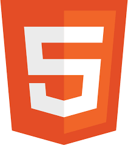
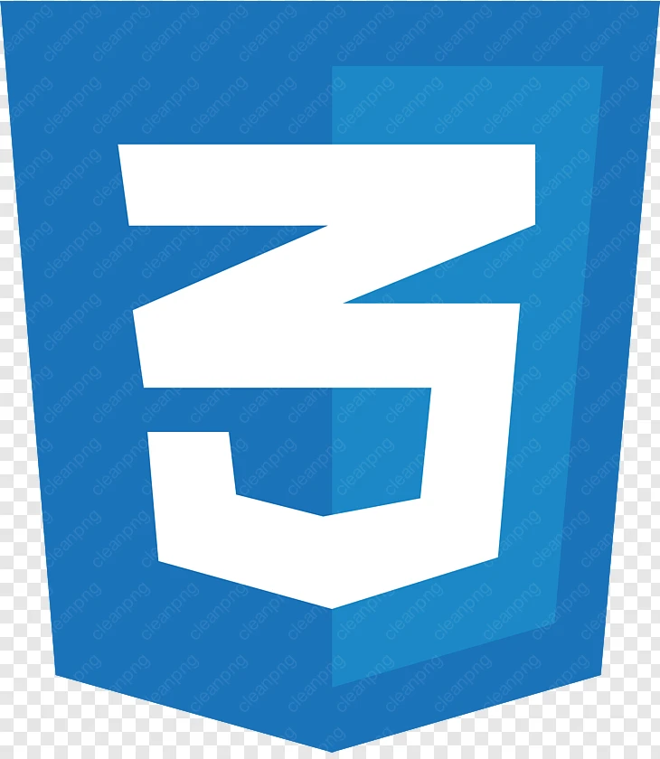

Website Perpustakaan
Project ini adalah pengembangan Website Perpustakaan yang digunakan untuk mempermudah manajemen data buku, peminjaman, pengembalian, dan pencarian buku oleh siswa secara online.
Sistem ini dibuat untuk mendigitalisasi layanan perpustakaan sekolah dengan fitur yang lengkap serta sistem login untuk siswa dan admin.
Fitur utama pada website ini:
- Login untuk admin
- Manajemen data buku
- Peminjaman dan pengembalian buku
- Pencarian buku berdasarkan judul atau kategori
- Dashboard laporan buku dan transaksi
Tools: HTML, CSS, PHP, MySQL
Peran: Fullstack Developer
Tools

